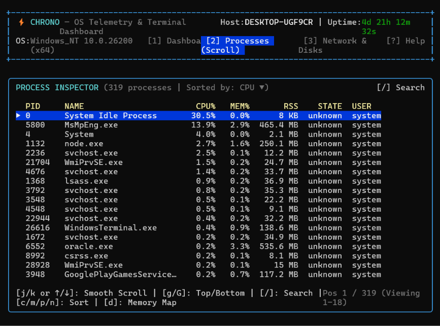
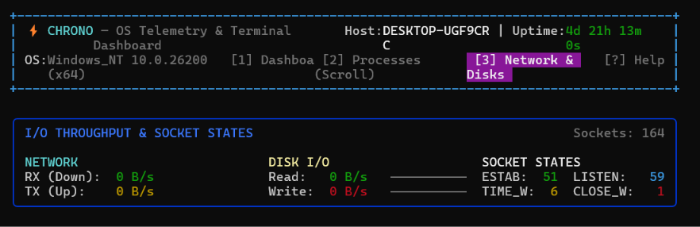
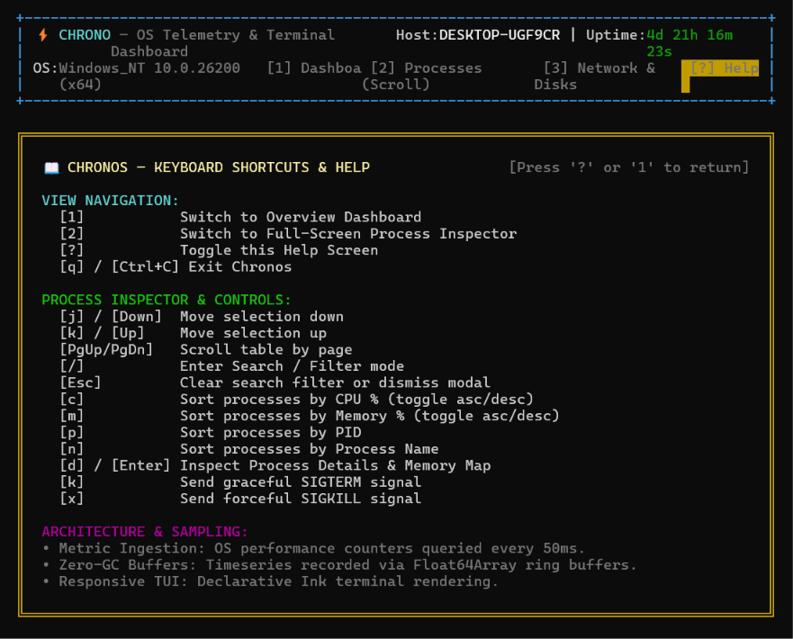

Building Chronos: High-Frequency OS Telemetry & TUI Dashboard in TypeScript
Chronos is a real-time, low-overhead OS telemetry engine and interactive terminal dashboard engineered from first principles in TypeScript. Powered by Ink (React for CLI runtimes), Chronos delivers high-frequency per-core CPU tick calculations, memory pressure monitoring, live network and disk I/O throughput tracking, deep TCP socket state analysis, and an interactive process manager with continuous rolling-window scrolling—all while keeping garbage collection pauses near zero.

The Motivation: Why Build a Custom Terminal Telemetry Engine?
System monitoring tools have evolved down two contrasting paths: classic C/C++ utilities like htop and btop, or heavyweight Electron and web-based dashboards. When developers want custom telemetry within automated terminal pipelines or modern cross-platform Node.js environments, standard tools pose distinct challenges:
- Garbage Collection Pauses in Node.js: Polling 16 or 32 CPU cores alongside disk, network, and process tables every 50ms to 250ms typically generates thousands of transient JavaScript objects per second. In standard Node runtimes, this causes periodic V8 Major GC pauses (Stop-the-World), introducing micro-stutters and artificial CPU spikes.
- Lack of Fine-Grained Hardware Sympathy: High-level system information wrappers often fail to calculate accurate delta throughput on Windows when interface names have spaces or virtual adapters are present.
- Terminal Rendering Overhead: Redrawing full terminal screens at high frequencies often results in screen tearing, ANSI cursor jitter, and ugly prompt remnants after exit.
Chronos was engineered from the ground up to solve these problems by marrying zero-allocation typed array ring buffers with a decoupled multi-tiered sampling loop and atomic terminal frame batching.
System Architecture: Decoupled Multi-Tier Telemetry Engine
To maintain smooth terminal interactivity without bottlenecking the event loop, Chronos decouples hardware metric acquisition into three distinct sampling tiers, feeding fixed-size typed ring buffers that are batch-consumed by the Ink presentation layer:
Core Engineering Subsystems
1. Zero-Allocation Typed Circular Ring Buffer (`RingBuffer.ts`)
Standard JavaScript arrays (array.push() and array.shift()) are catastrophic for high-frequency telemetry. Every shift() is an $O(N)$ memory copy operation that re-indexes the array and releases old elements to the V8 garbage collector.
Chronos solves this by allocating a fixed-size Float64Array once at startup. A rolling head pointer writes incoming points in $O(1)$ time with modular arithmetic, updating running statistics (minimum, maximum, and rolling sum) without ever reallocating memory:
export class RingBuffer {
private readonly buffer: Float64Array;
private head: number = 0;
private isFull: boolean = false;
private min: number = Infinity;
private max: number = -Infinity;
private sum: number = 0;
constructor(public readonly capacity: number) {
this.buffer = new Float64Array(capacity);
}
push(value: number): void {
if (this.isFull) {
const evicted = this.buffer[this.head];
this.sum -= evicted;
// Recompute min/max only when the evicted item was an extremum
if (evicted === this.min || evicted === this.max) {
this.recomputeExtrema();
}
}
this.buffer[this.head] = value;
this.sum += value;
if (value < this.min) this.min = value;
if (value > this.max) this.max = value;
this.head = (this.head + 1) % this.capacity;
if (this.head === 0) this.isFull = true;
}
// Returns chronological data slice in O(N) without array shifting
toArray(): number[] {
const size = this.size;
const result = new Array<number>(size);
const start = this.isFull ? this.head : 0;
for (let i = 0; i < size; i++) {
result[i] = this.buffer[(start + i) % this.capacity];
}
return result;
}
}2. Multi-Tier Sampling & Windows Netstat Deltas (`Sampler.ts`)
Different system counters require vastly different sampling cadences:
- Tier 1 (50ms High-Frequency Fast Loop): Samples per-core CPU time tick deltas (user, nice, sys, idle, irq) using native
os.cpus(). Computing instantaneous delta tick ratios over 50ms intervals yields immediate responsiveness to sudden thread bursts. - Tier 2 (250ms I/O & Socket Loop): Measures disk read/write throughput and TCP connection tables. On Windows, where network adapter names often contain spaces that lead to null values in higher-level telemetry packages, Chronos executes a fast async fallback parser over
netstat -eto compute live Rx/Tx bytes per second. - Tier 3 (1000ms Process Inspection): Samples top processes sorted by CPU and memory consumption. Scanning the process tree is expensive, so running it every 1000ms prevents telemetry overhead while keeping responsiveness snappy.
Tour of the Chronos Views
View 1: The Overview Dashboard
The primary dashboard is engineered to fit standard 80-column terminal windows without line wrapping. The CPU panel displays all 16 cores (C00 through C15) in a clean 2-column layout with 5-character bar gauges, real-time percentage indicators, and Unicode sparklines ( ▂▃▄▅▆▇█).
The right panel tracks system memory pressure, displaying Free, Active, and Available RAM alongside an 18-width swap gauge. At the bottom, a full-width blue panel provides immediate visibility into Network throughput, Disk Read/Write rates, and TCP connection distribution across ESTAB, LISTEN, TIME_W, and CLOSE_W states.
View 2: Process Inspector & Continuous Rolling Scroller
Pressing 2 switches to the live Process Inspector. Rather than a static paginated table, Chronos implements a smooth continuous rolling window scroller:

Key capabilities of the Process Inspector include:
- Vim-Style Navigation: Move line-by-line with
j/k(or↓/↑), jump half-pages with[/], and jump to top or bottom withg/G. - Live Interactive Search: Press
/to enter instantaneous substring filtering across PID, process name, and user. - Multi-Field Sorting: Hotkeys
c(CPU %),m(Memory %),p(PID), andn(Name) allow instant metric re-indexing. - Memory Map Inspection (`d`): Opens a modal revealing precise RSS, VSZ, thread count, and executed command-line paths for any selected PID.
- Process Termination (`k` / `x`): Allows issuing
SIGTERMorSIGKILLwith an interactive confirmation guard.
View 3: Network Throughput & Disks Analysis
Pressing 3 opens the dedicated Network & Disks tab. This view expands the historical sparkline buffers for dual-axis incoming (Rx) and outgoing (Tx) network bandwidth, disk I/O throughput, and real-time TCP socket state counters:

View 4: Help & Keybindings Cheatsheet
Pressing ? toggles the built-in Help & Navigation cheatsheet modal. It provides instant reference for all keyboard shortcuts, telemetry sampling frequencies, and color legend semantics:

Terminal Sympathy: Alternate Screen Buffers & Clean Exits
A critical flaw in many Node.js terminal applications is leaving corrupted cursor positions, hidden cursor states, or overflowing logs after exiting.
Chronos manages the terminal lifecycle with strict ANSI discipline:
- Alternate Screen Buffer (
\x1b[?1049h): Chronos switches to the terminal's private alternate screen buffer at launch. No text from the dashboard ever pollutes the user's primary terminal scrollback history. - Cursor Visibility Management (
\x1b[?25l): Hides the terminal cursor during frame rendering to eliminate flashing cursor artifacts. - Clean Teardown Sequence (
\x1b[?1049l\x1b[?25h): When the user pressesqor sendsSIGINT, Chronos hooks directly into Ink'sappInstance.waitUntilExit()promise, restoring the primary screen buffer and unhiding the cursor so the shell prompt reappears instantly and cleanly.